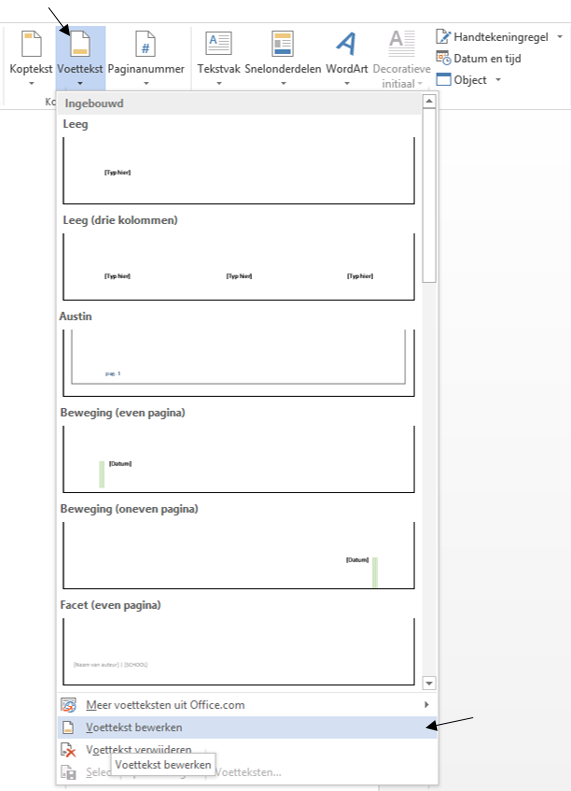

Handleiding
Wat is een sjabloon?
Een sjabloon vormt eenvoudig een beginpunt. Een Word-sjabloon (of elke andere Office-sjabloon) is een bestand dat u eenmaal maakt (of al gemaakt is voor jou) en vervolgens telkens opnieuw kunt gebruiken. Wij gaan nu een Microsoft Office Word sjabloon gebruiken. Sjablonen kun je onderscheiden van normale Word documenten (.docx of .docm) door:
- De extensie voor een sjabloon kan .dotm of .dotx zijn.
- Het icoontje ziet er ook anders uit:
Microsoft Office Word-document Microsoft Office Word-document met macro's Microsoft Office Word-sjabloon Microsoft Office Word-sjabloon met macro - Bij het type kan je het bestandstype of de extensie voluit zien. Dit is alleen beschikbaar als je grootte op Details of Tegels zet.
Hoe open je een sjabloon?
Om deze sjabloon te kunnen openen moet je er op dubbel klikken dan gaat Microsoft Office Word een nieuw document geopend met de naam: Document[nummer]. En moet in het blok Stijlen in het tabblad start er zo uit zien:
Handleiding
Algemeen
- Het papierformaat staat ingesteld op A4 (21 cm X 29,7 cm);
- Alle marges zijn 2 cm;
- Alle onderdelen komen in principe tegen de linkermarge.
Volgorde
Nu dat we weten wat een sjabloon is en hoe we het openen kunnen doen, kunnen we aan het eindwerk beginnen. De bundel van je eindwerk moet in deze volgorde.
- omslag;
- blanco blad;
- titelblad;
- woord vooraf;
- inhoudsopgave;
- inleiding;
- eigenlijke tekst;
- besluit;
- bijlagen;
- blanco blad;
Omslag
Een eenvoudig voorblad in licht karton in een zachte kleur.
Blanco blad
Een wit blad die blanco is.
Titelblad
Hier komt hetzelfde als wat op de omslag stond maar op normaal papier.
Woord vooraf
Het woord voorafkomt op een apart blad en beslaat één pagina. Hierin omschrijf je binnen welk kader je het eindwerk hebt geschreven. Bovendien kun je het bedrijf of de organisatie vermelden waar je stage hebt gelopen.
Inhoudsopgave
De inhoudsopgave geeft de lezer een eerste indruk van de inhoud en de structuur van het rapport of eindwerk. Je genereert de inhoudsopgave automatisch vanuit Word met een via de knoppen in de werkbalk Snelle Toegang.
Inleiding
Met een vlot leesbare tekst wek je de interesse van de lezer. Je vermeldt hierin de probleemstelling, de begrenzingen, een korte samenvatting en de situering van het onderwerp van je eindwerk. De inleiding begint op een nieuwe pagina.
Eigenlijke tekst
Hier komt de inhoud van het eindwerk en worden de stijlen toegepast.
Besluit
Hier verwacht de lezer een algemene conclusie. Ga uit van vaststellingen en van zowel positieve als negatieve ervaringen. Formuleer op een persoonlijke wijze je besluit. Dit is een belangrijk onderdeel. De lezer zal dit bij een eerste lezing zeker doornemen, samen met de inleiding en het woord vooraf.
Bijlagen
Hieronder geef je een overzicht van de bijlagen. Na het overzicht worden alle bijlagen geklasseerd.
Stijlen
In Microsoft Office word heb je verschillende stijlen. Deze stijlen zijn heel belangrijk om de scriptie volgen de correcte NBN-normen te maken. Als tekst in een stijl wil zetten moet die je die tekst selecteren en bij stijlen de juiste stijl aanklikken. Als het maar één alinea is kan je ook gewoon met de muiscursor in de alinea gaan staan en de stijl dat je wilt aanklikken.
| Stijlen | Beschrijving of functie |
| Standaard | Deze stijl is standaard, het wordt gebruikt voor normale tekst. |
| Standaard Laatste alinea | Deze stijl wordt altijd gebruikt als het de laatste alinea. Dus als de alinea boven een titel staat. Dit moet zo volgens de NBN-normen. |
| Titel 1 | Deze stijl moet gebruikt worden voor de volgende items: Woord vooraf, Inhoudsopgave, Inleiding, Besluit, Literatuurlijst en op Bijlagen. |
| Kop 1 | Dit wordt gebruikt voor de titels op het eerste niveau |
| Kop 2 | Dit wordt gebruikt voor de titels op het tweede niveau |
| Kop 3 | Dit wordt gebruikt voor de titels op het derde niveau |
| Kopje | Er mogen maar 3 niveaus zijn. Als er toch nog een titel is dat in het 4de niveau komt gebruikt deze stijl. |
| Opsomming | Is de stijl voor de opsomming. |
| Nummering | Is de stijl voor de nummering. |
| Voettekst | Is de stijl voor de voettekst. |
Inhoudsopgave
De inhoudsopgave geeft de lezer een eerste indruk van de inhoud en de structuur van het eindwerk. De Inhoudsopgave kan gemaakt worden door een knop. De inhoudsopgave moet er uiteindelijk zo uit zien:
Knoppen in de werkbalk Snelle Toegang (Macro)
Ten laatste hebben we ook nog de extra knoppen in het werkbalk "Snelle Toegang". Deze knoppen zijn kleine programmatjes in Word die geprogrammeerd/ gemaakt zijn om dingen te doen (Macro). Bij deze sjabloon heb je vier knoppen gekregen. Je kan ze boven links terug vinden dit wordt de "Snelle Toegang" genoemd.
- Inhoudsopgave maken
- Inhoudsopgave verwijderen (selecteer de inhoudsopgave eerst)
- Nummering stoppen
- Opsomming stoppen
Inhoudsopgave maken
Met deze knop wordt er een correcte inhoudsopgave gemaakt volg NBN-normen gemaakt. De inhoudsopgave geeft een overzicht van het document. Als je de stijlen correct hebt gebruikt.
inhoudsopgave verwijderen
Verwijderd de inhoudsopgave.
Let op! Je moet eerst de inhoudsopgave manueel selecteren.
Nummering stoppen
Stopt de nummering volgens de BIN-normen. (12pt na).
Opsomming stoppen
Stopt de opsomming volgens de BIN-normen. (12pt na).
Sectie
Het document is opgedeeld in twee delen (secties). Door middel van deze secties kunnen we verschillende voetteksten maken. Het eerste deel (sectie) bestaat uit een titelblad, een blad voor het woord vooraf, een ruimte voor de inhoudsopgave en een pagina voor de inleiding. Vanaf de eigenlijke tekst begint de tweede sectie. In dit document worden de secties gebruikt voor twee verschillende voetteksten te verkrijgen.
Voettekst
Voor de eerste sectie is er geen voettekst op het eerste blad (het titelblad). Voor de rest van deze sectie is er wel één. Het ziet er zo uit.
Het tweede sectie begint vanaf eigenlijke tekst. Hier is de voettekst hetzelfde maar met een nummer aan de rechter kant.

Om de voettekst te bewerken ga je gewoon met je muis over de voettekst staan (waar dat "Eindwerk: nv OstendPharma" staat). Dubbelklik er op en dan zou je in de voettekst zitten. Dan kan je het bewerken zoals normale tekst in Microsoft Office Word.
Als dat niet lukt kan je nog via het tabblad "invoegen" de knop voettekst aanklikken. Er verschijnt dan een vervolgkeuzelijst en helemaal beneden klik je op "voettekst bewerken".

Opslaan
Wanneer je klaar bent met je eindwerk of wilt opslaan. Sla het dan op als een .docm op zodat je later nog steeds de macro's kan gebruiken.